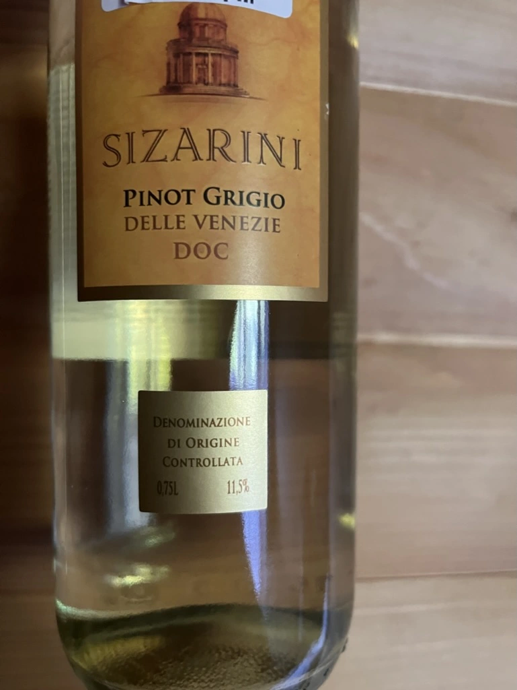

- Type
- White Still, Dry
- Producer
- Sizarini
- Vintage
- 2020
- Location
- Italy, Delle Venezie DOC
- Grapes
- Pinot Grigio
- Alcohol
- 11.5
- Sugar
- NA
- Price
- 275 UAH
- Cellar
- N/A
Ratings
2022-05-19 - 5.25
Simple and typical Pinot Grigio. Flowers, stone fruits and melancholy. Needs to be as chilled as possible to make this almost off-dry wine fresh and enjoyable. The good part that ethanol is well integrated. Not bad.